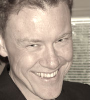

Johan Sandén
Curriculum Vitae (CV)

Meritlista (Curriculum Vitae).
Oförändrat får dokumentet kopieras och distribueras. En uppdaterad version går att ladda ner från min websida.
- För utskrift ladda ner den PDF
- För att läs den online som HTML
1 Allmänt
1.1 Information
- Namn: Sandén, Johan Ragnar
- Födelsedatum:
- Bostadsort: Gävle, Hille
- Körkort: B
- Civilstatus: Gift - Anna
- Förälder:
- Dante (-2006)
- Lukas (-2012)
1.2 Kontaktuppgifter
Namn
Johan Ragnar Sandén
Adress
Hattmursvägen 5
806 48 GÄVLE
Telefon
+46(0)79 - 333 94 03
E-post
johan.sanden@gmail.com
Webbadress
http://www.hoahoa.se
1.3 Vem är Johan?
- Mina vänner beskriver mig som tankfull och lugn.
- Jag föredrar att vara hemma på kvällar, helger och semester.
- En hängiven förespråkare av GnuEmacs1/-Linux, Git, Lisp, Python.
- Jag äter veganskt hemma men kan tillåta mjölk och ostprodukter när vi äter ute.
- Ordförande i Gefle Ölsellskap.
- Musik har varit ett intressen sedan jag kunde nå upp till pianot.
- Liten studio i källaren.
- Tjatade till sig en dator i julklapp vid 8 års åldern.
- Älskar katter.
- Bor lantligt i en gammal villa en mil utanför centrum
- Två barn. Lukas 2012 och Dante 2006
- Gift med Anna Sandén.
- Född och uppväxt i Gävle.
1.4 Önskade arbetsuppgifter.
- Teknisk projektledare, scrum-master, ren arkitekt eller it-strateg.
- DevOps/Systemutvecklare "Fullstack" med tyngdpunkt på backend och automatisering. Gärna i Unix/Linux-miljö.
- Jag håller gärna föredrag och möten oavsett vilken roll jag har.
1.5 Kompetens och erfarenhet
- Över 20 år erfarenhet i it-branschen främst som it-konsult och systemutvecklare.
- Projektledare, certifierad Prince2® Projektledare och ledarskap.
- Scrum master, jag har certifierat mig som både produktägare och scrum-master
1.6 Förtroendeuppdrag.
Sedan 2017 är jag ordförande i Gefle Ölsellskap. En förening som med drygt 100 medlemmar med främsta syfte att främja öl-kultur. Vi annordnar öl-provningar, studieresor och fester. Vi delar även ut ett årligt stipendium och har väldigt roligt tillsammans.
1.7 Nuvarande anställning
Sedan 2008 har jag arbetat som It-konsult i Gävle med KnowIT som arbetsgivare. Den senaste tiden har jag främst arbetat inom fastighetsdata mot Lantmäteriet. Rollerna och projekten har varierat.
| Gruppledare | Applikationsansvarig |
| Förvaltare/vidareutvecklare | Systemutvecklare |
| Teknisk konsult i "testfabrik" | Databasmigrerare |
| Deployer/Integrerare |
Under min tiden på Knowit har jag utbildat mig i agilt ledarskap, förvaltning och projektledning
Min nuvarande månadslön ligger på drygt 50,000kr inklusive förmåner och arbetstidsförkortning.
2 Utbildningar och kurser
2.1 Kurs: Systemförvaltning med PM3 och ITIL i samverkan.
| Regi | Tid | Plats | Diplom |
|---|---|---|---|
| Learning Tree | Juni 2017 | Stockholm |
2.5 Kurs/Certifiering: Projekledning
| Regi | Tid | Plats | Diplom |
|---|---|---|---|
| Learning Tree | Maj 2012 | Stockholm | PDF/Diplom |
2.5.1 Ingående kurser
| Kurs | Tid |
|---|---|
| Projektledning (Kurs 296) | Augusti 2011 |
| Utveckla användarkrav nyckeln till framgångsrika projekt (Kurs 315) | Oktober 2011 |
| Ledarskap i projekt skapa ett framgångsrikt projektteam (Kurs 346) | Januari 2012 |
| Ledarskap (Kurs 290) | Maj 2012 |
2.6 Kurs: Praktisk Projektledning
| Regi | Tid | Plats |
|---|---|---|
| Astrakan | December 2006 | Stockholm |
3 Kompetenser
3.1 Branscher
- Konsult : Jag har jobbat som konsult hos de flesta av mina Arbetsgivare
- Fastighet : på Lantmäteriet via Knowit
- TeleCom (Produktions test) : Ericsson AB via Syntronic Mandator ITG
- Test : "Testfabrik" på Lantmäteriet via Fujitzu
- 3D/Grafik/Realtid : KenVision
- Utbildning : Agil utveckling - som konsult mot Korsnäs via Knowit, Java - intern utbildning på Mandator, IT-handledning på Datorteket (Gävle Kommun)
- Smarta Hem : Utilator
4 Arbetsgivare och uppdrag
Större delen av mitt yrkesliv har varit som it-konsult. Främst har jag jobbat mot Lantmäteriet, Ericsson RBS. Hos dessa kunder har jag jobbat i flera större och mindre projekt.
Men jag har även gjort inhopp på bland annat.
| Gävle Kommun | Sandvik | Korsnäs |
| Digital | Forsmark (Vattenfall) |
4.1 Knowit
Nordiskt konsultföretag med lokal närvaro.
- Period: Oktober 2008 - Nuvarande
- Titel/Roller: Projektledare, Gruppledare, Scrum-master, Mentor, Applikationsansvarig, Lärare, Systemutvecklare, Konsult
- Uppdrag:
- Lantmäteriet - Cobra. Underhåll och vidareutveckling av fastighetssystem runt stordator och leveranssystem.
- Lantmäteriet - Arken. Arkivering (register, akter, historiska kartor och dokument mm)
- Gefle Ölsellskap - Utveckling av information/röstsystem inför Finölsfestivalen
- Lantmäteriet - Leveranssystemet (FinfoLev)
- Korsnäs - Ubildning i scrum och agila metoder
- Lantmäteriet - förvaltning av Externt Beställningssytem (EBS)
- Lantmäteriet - Projekt: Milins (delprojekt/migrering) i Muligan projektet.
- Plattformar: Linux (Ubuntu, Mint), Unix (Solaris), Windows XP
- Teknik: Python (pip/setuptools, flask, bottle, virtualenv, click, tox, pex), Emacs1/Org-mode, Docker, Java (Ant/Maven, Eclips/STS/JBuilder,JSF,Spring Framework) ,Oracle ,SVN, CVS, GIT, Hybernate ,Jira, Fitnesse
4.2 Mandator/Fujitsu
Fujitsu, ett internationellt konsultföretag 2.
- Plattformar: Solaris, Windows XP
- Period: Januari 2003 - September 2008
- Titel: Teknisk rådgivare i test., Arkitekt, Systemutvecklare, Konsult
- Uppdrag:
- Sandvik AB - Div. mindre projekt, REXX, ASP (IIS, SQLServer).
- Lantmäteriet - förvaltning och vidare uteckling av Externt Beställningssytem (EBS)
- Lantmäteriet - Alp projektet. Nationellt system för nytt adress register.
- Lantmäteriet - Iris programmet. Nytt inskrivningssystem för fastigheter.
- Teknik: Java, Emacs1, Org-mode, BEA WLS, Tibco RDV, Fujitzu iFlow., XML/Soup, NetBeans (Visual Web Pack), Eclips, Oracle, Spring, Hybernate, JBuilder, Ant, MercuryInteractive (TestDirector, Quick Test Proffessionell),senare HP QC, Tomcat
4.3 ITG Data
Dataavdelningen på ett industriteknik företag.
- Period: Februari 2001 - December 2002
- Titel: Systemutvecklare, Konsult.
- Uppdrag: Ericsson AB, WCDMA Radiobas, Utvecklande av systemtester för produktion.
- Plattformar: Windows, Solaris
- Teknik: Microsoft Visual C ++, MFC
4.4 Utilator
Ett litet it-företag med inriktning mot "smarta hem"3.
- Period: November 2000 - Februari 2001
- Titel: Systemutvecklare.
- Plattform: Linux Redhat
- Uppdrag: "Smarta hem"
- Elektroniskt bokningssystem (garage, tvättstuga osv.)
- Tekniker: Java, c
4.5 Mind
Ett Stockholmsbaserat konsultföretag med inriktning på web.
- Period: Maj 2000 - November 2000
- Titel: Java Expert, It-konsult.
- Plattformar: Windows 2000, Solaris
- Uppdrag: Portaler
- Affiliate web
- Resebyrå
- Tekniker: Javascript, HTML, Servlets, JBuilder, BEA WLS.
4.6 Mandator/CellNetwork
Ett nationellt konsultföretag.
- Period: April 1999 - Maj 2000
- Titel: It-konsult.
- Uppdrag: Ericsson AB
- CDMA, Produktionstester av kretskort
- CDMA, Utvecklande av Radiobastester.
- Plattform: Windows NT
- Tekniker: C++, MFC, Idefix
4.7 Syntronic
Konsultföretag med inriktning på elektronik, radio och telecom.
- Period: September 1997 - April 1999
- Titel: It-konsult, Systemutvecklare, kortansvarig.
- Uppdrag:
- Interna uppdrag på Syntronic i Java för websidan.
- Syntronic - Korttestinterface
- Ericsson AB - GSM - nålfixturer/korttester
- Ericsson AB - GSM - Radiobas översättning av interna kommunikationsprotokoll.
- Plattform: Windows NT, Windows 3.11, Hårdvarunära programmering
- Tekniker: Borland Pascal, Java, JBuilder, c/C++ Visual Studio, MFC, ASP, Assembler, Idefix
4.8 KenVision
Lösningsföretag med inriktning mot 3D och virtual reality. Dotterbolag till Profildesig, ett företag med inriktning mot mässor, monterdesign och reklam.
- Period: Februari 1996 - April 1997
- Titel: Programmerare/Systemutvecklare.
- Plattform: Windows 3.11, Windows NT
- Uppdrag
- Teknikmässa i Älvsjö åt Digital
- Gävle kommun - Gävle 550
- Språk/Verktyg:
- c/C++ i Visual Studio, Sense8 WorldToolkit